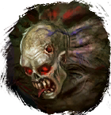
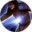
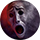

Открыть в интерактивной вики →
| Уровень | лёгк. 75 / норм. 90 / тяжел. 110 |
|---|---|
| Сила (PvE) | 3922 |
| Аспект | Yantrei |
| Здоровье | лёгк. 5000 / норм. 11 000 / тяжел. 17 000 |
| Мана | лёгк. 3000 / норм. 4000 / тяжел. 4000 |
| Выносливость | лёгк. 3000 / норм. 4000 / тяжел. 4000 |
Локация
- Белый Район
- Квартал Геурократоса
Команда

Дроп


Описание
 Охрана Ненасытного
Охрана Ненасытного Умения

Удар в Печень Удар в Печень — удар головой, таран, обычная атака- Хадуокен Хадуокен — плевок

Аура Ужаса Аура Ужаса — боевой клич, паника
Иммунитеты / особые умения
Устойчивость к обездвиживанию